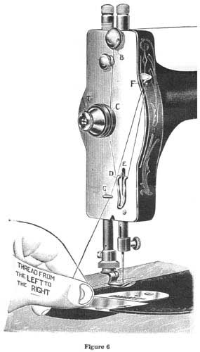
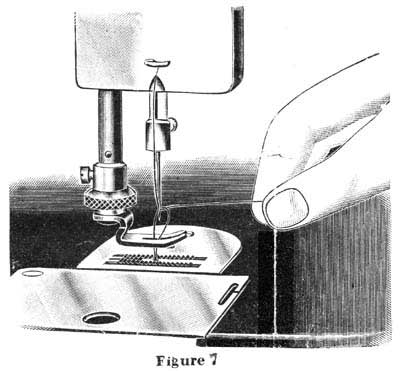
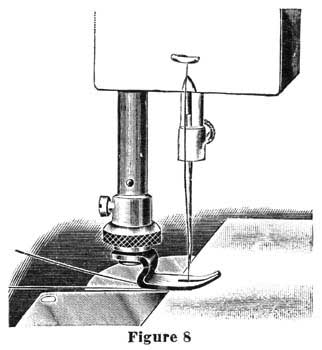
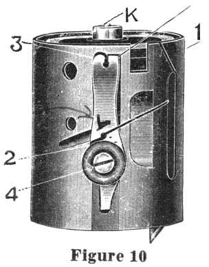
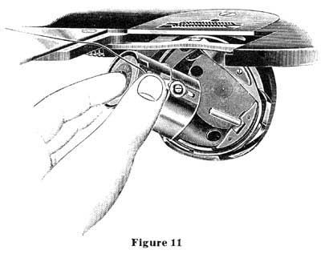
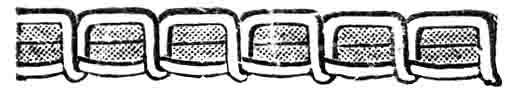
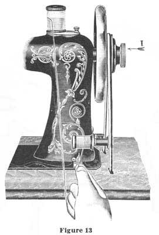

THE NEEDLEBAR
ONLINE MANUALS SECTION
INSTRUCTIONS FOR USING THE
ELDREDGE TWO SPOOL
SEWING MACHINE
Part Two
SIZE OF NEEDLES AND THREAD TO BE USED ON DIFFERENT MATERIALS
|
CLOTH
|
SIZE NOS. OF NEEDLES
|
THREADS
|
||
|
COTTON
|
SILK
|
LINEN
|
||
| Finest Light Weight Goods |
No. 00
|
200 to 500
|
000
|
-
|
| Fine Linens and Silks, Lawns and Nainsooks |
No. 0
|
100 to 200
|
000
|
-
|
| Collars, Handkerchiefs, Fine Shirts, Underclothing |
No. B
|
80 to 100
|
0 to 00
|
-
|
| Common Muslins, Light Clothing and Quilting |
No. 1/2
|
60 to 80
|
A to 0
|
-
|
| Tailoring, Light Clothing and Boys Clothing |
No. 1
|
40 to 60
|
A to B
|
90 to 100
|
| Heavy Dressmaking, Cloakmaking and Heavy Tailoring |
No. 2
|
30 to 40
|
B and C
|
70 to 80
|
| Extra Heavy Work |
No. 3
|
24 to 30
|
C and D
|
50 to 90
|
| For very coarse work only |
No. 4
|
-
|
-
|
-
|
Always use the same size of thread on lower spool as on upper one.
The number of the needle is marked upon its shank.
Note: - Scale showing proper needle to use with different sizes of thread is stamped on the spool case cover.
In ordering needles, they are for ELDREDGE TWO SPOOL MACHINE and give the sizes wanted. If you cannot possibly procure genuine needles marked ELDREDGE TWO SPOOL you can use regular Singer V.S. No. 2 needles.
THREADING THE MACHINE (See figure 6)

Before threading the machine, turn the hand wheel toward you until the take-up is at the highest point. Place spool of thread on the spool pin. Draw the thread from the spool under the hook and down between the discs "B", passing the thread on side toward you between the discs. Be careful not to wrap it around them. From point "B", carry the thread straight down and once around the tension pulley "C", then down under the auxiliary hook and spring "D & E". Then up through the take-up "F", (threading from the front) down through the thread guide "G". (There is an opening in the guide "G" at left side to allow thread to enter it.) Then through the eye of the needle, threading from left to right.
TO DRAW UP THE UNDER THREAD
(See figure 6)
|  | Let the thread extend through the needle two or three inches when the take-up is at its highest point. Now hold this end of the upper thread slackly with the left hand and turn the hand wheel carefully toward you while the needle goes down and raises again to position shown in figure 7 above, bringing the take-up again to its highest point. Then draw the upper thread and the under thread will come up with it, as shown in the illustration. Pass both threads under the presser foot, keeping your foot in the treadle to hold the take-up at its highest position. It is necessary to draw up the under thread before putting cloth under the presser foot and starting to sew, in order to make perfect stitches from the start. |
TO COMMENCE SEWING
(See figure 8)
|
Pass both threads under the foot at the back, as shown in illustration, placing the cloth under the presser foot and letting down the presser lifter, which lowers the foot onto the goods. Start the machine by turning the hand wheel toward you. Do not pull or push the work. The feed will carry it properly. START RIGHT When starting to sew, be sure that the threads and cloth are in position, as shown in this illustration. |

|
REMOVING THE SPOOL CASE
 |
| To remove the spool case, open the spool case cover, as shown in figure 3, (page 3), and with the forefinger, as shown in figure 9, above, swing the top of the spool case outward and grasp it between the thumb and first two fingers, raising it upward out of the machine. Do not remove spool case when needle is down, as this may bend the needle. Be sure that the point of needle is above the needle plate. |
THREADING THE SPOOL CASE (See figure 10)
|  |
In threading the spool case, take it in the left hand, placing the spool on the spindle (see letter K, figure 10), then drawing the thread as indicated, into the slot (no. 1), over the case and under the tension spring (No. 2). Hold the thread with the thumb, against side of spool case at point between No. 2 and slot (No. 1) then draw it under the end of the tension spring (No. 3). Leave about two inches of thread projecting outside of the case. THE SPOOL CASE LOCK The Spool Case is locked in position in the stationary race by a spring plunger located in the top of the spool case spindle, (see letter K, figure 10). It is possible after long use this spring plunger may wear and fail to snap into place, or to hold the case firmly in proper position. This can be adjusted by pressing down upon the spring plunger with a screw driver, until the screw driver slips into the slot of the hollow screw surrounding the plunger. Then turn this hollow screw to the left about one quarter turn, possibly slightly more or less, depending on how the case fits. By turning this screw to the left, it will raise this spring plunger higher above the head of the spindle. |
INSERTING THE SPOOL CASE
|

|
| Be sure that the needle bar is at its highest point before attempting to place spool case in position. Grasp the spool case between the thumb and first two fingers of the left hand, placing the thumb directly over the tension spring on spool case, as shown in the above illustration. Place the spool case on spindle, (see letter "L", figure 11) then push it down as far as it will go and press it inward with the finger until it locks into place. If it fails to lock, the case is not in the correct position to fit properly. By turning it slightly to the right or left, it can be pushed down so it will lock in proper position. |
TO THOROUGHLY CLEAN THE MACHINE
Granting that the machine has been kept thoroughly well oiled and clean, it may still occur, if the oil is poor or if the machine is allowed to stand a long time without using, that the oil may dry out of the bearings or get thick and gummy, which will cause the machine to run hard and may seriously injure the bearings. When a machine is in this condition, before applying fresh oil, it is well to apply kerosene to all of the bearings very liberally, meanwhile running the machine slowly by hand to move the working parts. Apply kerosene at intervals every few moments, until every bearing has been thoroughly flooded and all of the residue from dry or thick gummy oil, has been thoroughly dissolved and washed out. Then run the machine slowly a few minutes to allow the kerosene to work out of the bearings, after which, wipe the machine dry and free from all kerosene and apply fresh machine oil. By following these instructions carefully, the machine will always run light and free.
THE AUTOMATIC TENSION
The Automatic Tension is a most important feature of this machine, as it is entirely self-acting, requiring no attention or adjustment by the operator, regardless of the nature of the fabric or of the size or kind of thread used. This machine, before leaving the factory, is tested on a very wide range of thread and fabric and under all ordinary conditions of family sewing. Absolutely no adjustment of the tensions is required for this work.
If for manufacturing or special work of any kind, it is desirable to alter the tensions, the upper tension can be adjusted in the following manner: - Turn the knurled thumb piece on the tension disc "T", (figure 6, page 6) toward you to tighten the tension, or to the left, or from you, to decrease the tension.
Tension on the spool case can also be adjusted, but rarely, if ever, is this necessary. To change this tension, turn the screw No. 4 (figure 10), page 8) to the right to increase, or to the left to decrease tension.
When the tensions are properly adjusted the stitch should lock in center of goods thus:
When upper tension is too tight, the upper thread will lay flat on upper side of goods and stitch appear thus:
When upper tension is too loose, the lower thread will lay flat on under side of goods and stitch appear thus:

THE STITCH REGULATOR

The numbers on the index plate from "1" to "0" indicate long and short stitches. By removing the stitch regulator from you to No. 1, the machine will sew five stitches to the inch, while at No. 0 it will sew thirty-five stitches to the inch. This is a wider range than on any other machine. You may sew any desired length stitch by moving this switch regulator to the point on scale to suit requirements. The regulator automatically locks itself at all points.
WINDING THREAD ON AN ORDINARY SPOOL

One of the principal features of this machine is the savings of winding bobbins as on other machines. It may happen that you will have only one spool or part of a spool of thread available. In that case, take an empty spool that will fit into the spool case (size 50 spool or smaller) and wind onto it by means of the Automatic Spool Winder, the quantity of thread you may desire to use. Before starting to wind thread, release the hand wheel, by turning the knurled thumb piece (letter "1", figure 13) one half turn toward you. This throws the machine out of gear. Then place full spool on spool pin, as illustrated. Next take the empty spool in the left hand and with the right hand, wrap a few strands of the thread around this spool. Then place spool on the spindle of the spool winder, using care that the thread runs the under side of the spool, as illustrated. Raise the spool winder until the pulley comes in contact with the belt, then start the treadle and proceed to wind spool. If you wish to sew with thread that is coarser than No. 50, you can easily do so by winding the same onto an empty No. 50 spool, following instructions as given above.